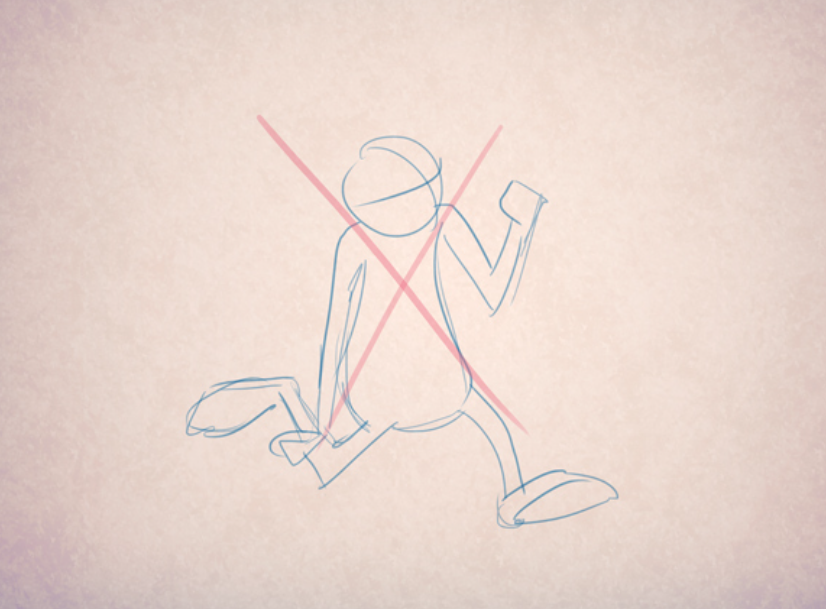
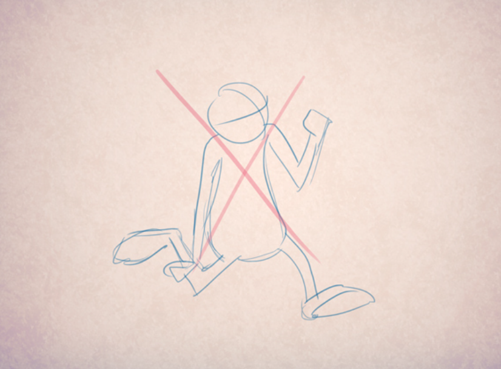

Основные правила построения кадра
Формирование новых знаний и способов деятельности (изложение нового материала)
Формирование новых знаний и способов деятельности (изложение нового материала)
«Кривая движения» - воображаемая траектория, по которой тело вашего персонажа движется. Она характеризуется простотой и интенсивностью. Эта блестящая техника поможет вам достичь желаемой цели при планировании своих рисунков. С помощью нее вам удастся создать драматический эффект. Держите это в уме в следующий раз, когда будете делать наброски персонажей в действии.
 Кривая движения должна быть плавной и иметь направление, чтобы нам было очевидно, что намеревается сделать каждый персонаж.
Обратите внимание, как странно выглядит дизайн, основанный на сложных кривых движения.

Подготовка или упреждение - техника, которую используют для того, чтобы подготовить зрителя к действию, которое вот-вот произойдет. Ее применяют для подготовки движения или появления предмета, персонажа и т.п., так называемый предварительный набор энергии, который часто предшествует кульминации.
Кривая движения должна быть плавной и иметь направление, чтобы нам было очевидно, что намеревается сделать каждый персонаж.
Обратите внимание, как странно выглядит дизайн, основанный на сложных кривых движения.

Подготовка или упреждение - техника, которую используют для того, чтобы подготовить зрителя к действию, которое вот-вот произойдет. Ее применяют для подготовки движения или появления предмета, персонажа и т.п., так называемый предварительный набор энергии, который часто предшествует кульминации.
 Теоретически подготовка создается из мгновенного движения, которому одновременно противопоставляется движение в противоположном направлении. В анимации это подразумевает, по большей части, подготовку к непосредственному действию и возврат, чтобы завершить цикл.
"Тайминг" означает расчет количества рисунков, из которых состоит определенное действие. Например, объект или персонаж, который передвигается медленно или с трудом - это обычно тяжелый персонаж. Тайминг диктует количество кадров и фаз, которые вам необходимо нарисовать, чтобы правдоподобно передать сцену. То же самое вам понадобится сделать и для рисования легкого объекта.
Теоретически подготовка создается из мгновенного движения, которому одновременно противопоставляется движение в противоположном направлении. В анимации это подразумевает, по большей части, подготовку к непосредственному действию и возврат, чтобы завершить цикл.
"Тайминг" означает расчет количества рисунков, из которых состоит определенное действие. Например, объект или персонаж, который передвигается медленно или с трудом - это обычно тяжелый персонаж. Тайминг диктует количество кадров и фаз, которые вам необходимо нарисовать, чтобы правдоподобно передать сцену. То же самое вам понадобится сделать и для рисования легкого объекта.

Уровень камеры выровнен относительно земли и объектив расположен перпендикулярно главному объекту съемки.

Камера направлена на объект снизу вверх.

Камера расположена под углом сверху вних по направлению к предмету.

Высокий ракурс — это еще один необычный способ съемки пейзажей. В данном случае фотограф снимает сверху вниз, что позволяет увидеть объекты с высоты птичьего полета. Такой ракурс подходит для съемки пейзажей с высоты гор, побережья, лесов и других объектов, которые можно рассмотреть со всех сторон.
Назад
В крупном плане по высоте помещается голова и шея персонажа, иногда с плечами. Этот план нужен для выражения эмоций, а также как способ передачи диалогов. Эта сцена полностью о персонаже, она сообщает нам важные вещи, которые мы должны знать, чтобы понять историю. С их помощью мы можем сказать, что персонаж чувствует и о чём думает.
У этого плана тоже есть вариации, как например средне-крупный (молочный) план, который заканчивается где-то на уровне грудной клетки персонажа. Чем крупнее план персонажа или объекта, тем больше внимания на нем концентрируется. Окружение отходит на второй план и в фокусе остается только персонаж или объект, который вам интересен.
Назад
Такая крупность может быть использована для того, чтобы показать большое напряжение, очень тонкую эмоцию, или для акцентирования важной информации. Это зависит от того, что хочет показать режиссер и почему. В такой сцене ничего не имеет значения, кроме объекта на котором сконцентрированно внимание. Фон обычно неразборчив, мы можем видеть только персонажа или объект, который заполняет кадр частично или полностью. Сверхкрупный план очень четко подает информацию, не дает зрителю выпасть из сюжета, описывает историю, персонажей и ситуацию в деталях.
На одном кадре ничего неважно, кроме кнопки, на другом только рука и заточка карандаша. И это, как правило, маленькие отрывки в эпизоде. Фон неузнаваем, виден только персонаж или объект, поскольку они помещены полностью в рамку кадра. Это держит зрителя в курсе истории и ситуации с максимально близкого расстояния. У персонажа почти нет места для передвижения, поэтому зрители могут сфокусироваться на выражении лица и эмоциях. Это также можно назвать “врезкой”: вместо того, чтобы делать наезд камерой, можно сделать монтажную склейку на крупный план лица или другую часть тела персонажа, чтобы показать нечто важное. Каждый план несет разную смысловую нагрузку, в зависимости от того, что режиссер хочет сказать аудитории. Насколько крупным или общим планом будет снята сцена, зависит от того, на чем создатели фильма хотят сфокусировать наше внимание и какую информацию они пытаются донести.
 Назад
Назад

Раскадровка состоит из рисунков, иллюстрирующих мизансцены фильма, позже они будут смонтированны в аниматик (стори рил), состоящий из последовательности кадров, собранных в соответствии с репликами героев. Это позволяет режиссеру и монтажерам увидеть, что они могут вырезать из фильма, чтобы подогнать его под необходимый хронометраж, проверить все сцены в монтаже, увидеть как они склеиваются между собой, а также спланировать все движения камеры и утвердить продолжительность каждой отдельной сцены. Законченный аниматик представляет собой основу, которая даст направление всему производственному процессу.
Назад
Раскадровка состоит из рисунков, иллюстрирующих мизансцены фильма, позже они будут смонтированны в аниматик (стори рил), состоящий из последовательности кадров, собранных в соответствии с репликами героев. Это позволяет режиссеру и монтажерам увидеть, что они могут вырезать из фильма, чтобы подогнать его под необходимый хронометраж, проверить все сцены в монтаже, увидеть как они склеиваются между собой, а также спланировать все движения камеры и утвердить продолжительность каждой отдельной сцены. Законченный аниматик представляет собой основу, которая даст направление всему производственному процессу.
Назад
Процесс финализации лейаута включает в себя добавлление в сцену финальных моделей всех объектов и окружения. Все модели теперь занимают преднезначенное им место и формируют декорации. Место всех этих предметов в кадре помогает повествованию, направляет взгляд зрителя или позволяет персонажу взаимодействовать с окружением.
Назад
После того, как тела персонажей анимированы, добавляется движение их одежды и волос. Это движение связано с движением персонажей, и создается при помощи компьютерной симуляции физических свойств ткани и волос. Симуляция берет в расчет гравитацию, вес, эластичность, трение и другие факторы, в том числе, и столкновения каждого предмета одежды с самим собой и с окружающими объектами. Необходимо, чтобы волосы и одежда двигались в соответствии с целями конкретного кадра.
Назад
Шейдинг — это процесс, при котором объект наделяется цветом и тактильными свойствами, которые помогают зрителю распознать материал из которого изготовлен объект. На этапе шейдинга также принимается важное решение о том, как объект реагирует на свет: как свет поглощается, отражается или рассеивается при освещении объекта. После того, как шейдинг закончен, добавляется освещение, которое и формирует окончательный вид сцены. В дальнейшем для улучшения игры света и теней используются цветовые фильтры и работа с прозрачностью объектов. И в самом конце добавляются эффекты реального мира, такие как оптические характеристики объектива или размытие быстро движущихся объектов, что позволяет придать персонажам свойства, знакомые зрителю по традиционному кинематографу.
Назад